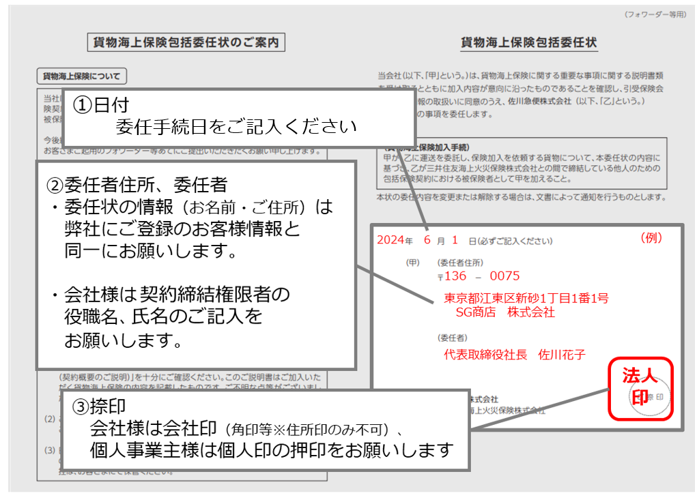

加入状況：{{riyouFlgText}}

包括委任状の内容を修正し、再度申し込みをお願いします。
■よくある登録不備事例
・3枚すべてにご記入いただいていない。
・アップロードしたファイルが間違っている。
・ご記入頂いている情報が佐川急便にご登録頂いている情報と異なる。
・押印がされていない。
・日付が入っていない。
■外航貨物海上保険の対象について
・本保険は、下記の除外貨物を除いた一般貨物（日用品・雑貨等）を対象とします。
・なお、保険の対象となるか不明の場合は、事前に佐川急便までご確認をお願いします。
・事業主でない個人のお客様のご加入は不可となりますので、ご了承ください。
・保険料は、CIF価額（JPY）×110%×0.2%になります。
・ご不明な点等について、0120‐18‐9595佐川急便グローバルコールセンターまで【平日】9：00～18：00〈土日祝を除く〉
■お申込みの際は以下をご確認ください
・会社様は会社印（角印等※住所印のみ不可）を個人様は個人印の押印をお願いします。
・委任状の情報（お名前・ご住所）は、弊社にご登録のお客様情報（お名前・ご住所）と同一にお願いします。
・個人事業主様で会社印をお持ちでないお客様は、あらかじめ、弊社にご登録のお客様情報（お名前）を個人様名にご変更のうえ、
保険加入委任状に氏名のご記入と押印の上、ご提出をお願いします。
重要事項のご説明
外航貨物海上保険でお取り扱い出来ない品目について
お申込み用包括委任状原本
■押印頂いた委任状原本(「フォワーダー等用・引受保険会社用」)については、佐川急便管轄営業店にお渡しください。
お申込み用包括委任状原本に必要事項を記載しアップロードをお願いします。
PDFファイルで「重要事項のご説明」の提供を受けることに同意し、記載事項を確認・保存しました。
「外航貨物海上保険でお取り扱い出来ない品目について」の記載事項を確認しました。
保険利用申込
申込に利用した包括委任状の確認